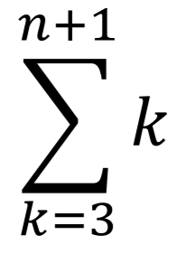

Cliquez ici pour télécharger le fichier Python
Exercice 17
Pour P(2) sans la méthode d'Horner:
def polynome(coefficients):
result = coefficients[0]
for i in range(1, len(coefficients)):
result += coefficients[i]*2**i
return(result)
En calculant le polynôme de manière "classique", on doit faire  opérations.
Grâce à l'agorithme d'Horner, nous n'avons plus qu'à faire n-1
multiplications et n-1 additions.
Pour P(2) avec la méthode d'Horner:
def horner(coefficients):
# Retourne la liste pour pouvoir la parcourir plus facilement
coefficients.reverse()
result = coefficients[0]
# Parcourt tout les coefficients à part a_0
for i in range(1, len(coefficients)):
result = result*2 + coefficients[i]
return result
Exercice 19
Ces fonctions renvoient le résultat sous-forme de liste
def xor(a, b):
return int(a != b)
def demi_additionneur(a, b):
return (xor(a,b), a and b)
def additionneur_complet(a,b, carry=-1):
somme1, carry1 = demi_additionneur(a, b)
somme2, carry2 = demi_additionneur(somme1, carry)
return (somme2, carry1 or carry2)
def addition_binaire_sur_n_bits(a,b,n=0):
carry = 0
result = []
for i in range(len(max(a,b))-1 , -1, -1):
somme3, carry = additionneur_complet(int(a[i]), int(b[i]), carry)
result.append(somme3)
result.append(carry)
if n==-1:
n = len(result)
elif n==0:
return []
return result[n-1::-1])
>>> addition_binaire_sur_n_bits([101],[101])
[1,0,1,0]
>>> a = [1,1,1,0,1,0,0,1,1,0,1]
>>> b = [1,1,1,0,0,0,1,0,1,0,1]
>>> addition_binaire_sur_n_bits(a,b,5)
[0, 0, 0, 1, 0]